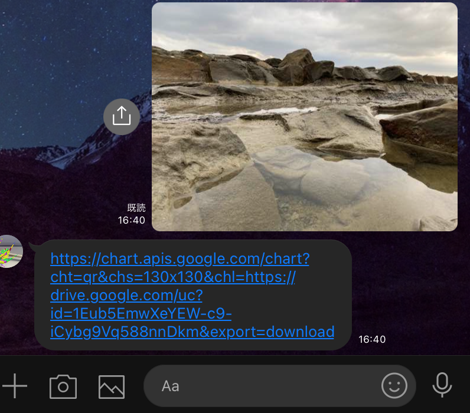
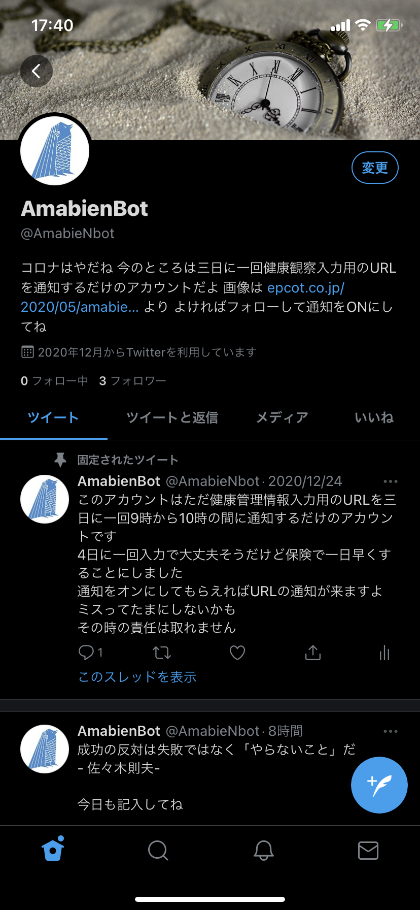

基本的に独学，学習中のものを含めて掲載しています。
現状，C++の記入まではできていないが，ヒストリアのプチコンに応募したもの
他に，学祭で描いた絵をスクリーンに写した海を泳ぐようなものも作った
初めて投稿したもの，一か月頑張ってじゃんけんのようなシューティングゲームを作成した
動画へんとのことで最後の映像をとにかく作りたかった．階段を上る感じや歩く感じがダメダメだった．
本人に直接攻撃力がないようにしたら，柵の召喚によって攻撃を与えることになった．魔法陣の作成ができて感動した覚えがある．
地域団体であるPavéの活動の一環として地域の人からイラストを集め，それをもとにした花火を山手地区にある出雲近隣公園，グラバー園ドックハウス，グラバー邸からの視点を再現し，動画として放送した．ツールとしては，画像の前処理はpythonにて行い，モデリングはbledner，撮影にはUE4，最後の音楽や多少の処理にAviutlを利用した．仲間を見つけることができなかったため，自分ともう一人，建築分野の人と協力して作成した．
一度参加したハッカソンでの発表形式がclusterであったことを期に所属団体でのLT会でclusterを利用したときに作ったマップ．how to も含めて環境要因で雪を降らせることやものの射出，スタッフと参加者によっては入れる場所と入れない場所を作り，コンソールを設置したりした．

🌸 御礼 🌸
— 中村ほうどうチャンネル（中村法道・前長崎県知事） (@nakamura_hodo) February 17, 2022
メタバース #ほうどうルーム
をお楽しみいただいている皆様へ😌#メタバース #cluster #DX pic.twitter.com/JlRHJ9431N
前述の東山手洋館活用プロジェクトとして，居留地まつりなどにかかわっていたときに，2022年がコロナ禍ということもあり，オンライン開催となった．この時に，ここでは省略するが，clusterのワールドを作成し，簡易的に活動内容をポスターセッションのようにいつでも見れるようにした．その時の縁などもあり，県知事選において，メタバースを体験するという目的のもとに，中村法道氏の政索などを体験できるようにclusterのプラットフォームを用いワールドを作成した．現在は非公開としているので，選挙中のTwitterを載せておく．
所属団体でお客さん相手に撮った写真を共有する方法として，iPhoneではAirDropがあるのに対して，androidに対して共有する方法が見つからなかった．
その解決策として，GoogleAppScriptを利用し，送信した画像を共有するためのQRコードのURLを送り返すというchatbotを作成した
大学の健康管理システムを4日に一回入力する必要があるため，余裕をもって3日に一回アクセス用のURLをつぶやくbotを作成した．同じ内容のツイートが10回くらい空けないといけないということだったので，名言を10種用意しておき，ついでにツイートするようにした．
AmabienBot Comming Soon
heroku，Django，jinja2を用いて，webアプリを作成中